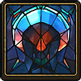
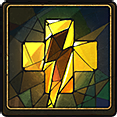

Masteries

Sudden Blast
The charge-up time before Bertrude can use her Aura Blast is greatly reduced.

Vital Pounce
After Bertrude pounces at an adversary, she instantly recovers all her Stamina.
Statistics
 Glory:
Glory: 20
Rank: Radiant
This attribute affects damage dealt to a Pyre. Quickness:
Quickness: 11 (3.4m/s)
Rank: Average
This attribute affects movement speed. Presence:
Presence: 19 (5.8m)
Rank: Strong
This attribute affects Aura size. Hope:
Hope: 9 (11s)
Rank: Melancholy
This attribute affects duration of banishment.Rites Powers
 Blast
Blast
Fires her Aura in a wedge-shaped pattern.
 Pounce
Pounce
Launches forward across great distances.
 Slither
Slither
Slithers forward much faster but with less control.